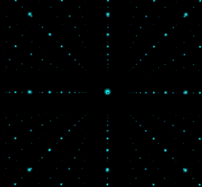

Psst, press Ctrl + Shift + C
My Minds labyrinth

by Miguel Flores
The way I see the world is mostly through internet influence, in
every conversation, throughout every thread I find from the web. There is either too much of, or not enough
of
anything seemingly interesting or worthwhile nowadays. Like a fatigue of the same derivative uninspired
content. No originality, no spin, just purely lame content...
So why not show a word that defines pushing
the boundary and define what it means when you exert some;
noun | ef·fort ˈe-fərt

Psst, press Ctrl + Shift + C
My Minds labyrinth
1
: conscious exertion of power : hard work
a job requiring time and effort
The time it takes for you to get up, walk to work, for exercise, for an area to study, or gain experience,
ect. Will power and dedication is a standard for students and adults alike.
Animation
2
: a serious attempt : try
making an effort to reduce costs
without trying, we might not know if we can make the 'said-to-be-make-believe' dream come true. Free will is
a naturally given virtue, decisions can be overwhelming, but we can still weigh and manage our time with
enough caution to everything else going on around us. Your time is valuable, but why not spend it to earn
yourself a chance at something that could help you in the long run.
Coding website

3
: something produced by exertion or trying
the novel was her most ambitious effort
through frowns and smiles, whatever you like to keep on display while whittling away at the woodwork.
Ambition and love for the craft you enjoy making or doing is key to human effort. If you filled a role that
you were made believed to live up to. Would you give in to that projected effort placed upon you, or believe
what your doing isn't your ambition? What if its all you know, how else would you find out that there is
something better than what the legacy you grew up on isn't the peak you'd wanna elevate on.
4
: effective force as distinguished from the possible resistance called into action by such a force
A good push or shove, a gesture or universal hint in the right direction, can lead to a discovered hobby, ,
turned into past time, turned into a obsession, can land right into your beliefs "That this is something!" a
thing your good at? Bad at? who cares, you like it and you could want it more than the rest of the pleasures
in life. Maybe you can make money off of it, what sorts of ideas can this topic treat you with, might there
be even more things related to this that you could be doing?
Discord reactive

In the end, whatever you make, and where ever you go. If you managed to make it this far in life, and
have read every word typed down on a one mans land area of the internet. Your determination shall show
you what else you can do. but for now, just take it easy. dont stress too far off into a place you cant
dig your way out of. Focus and balance the situation at hand.
thats all...